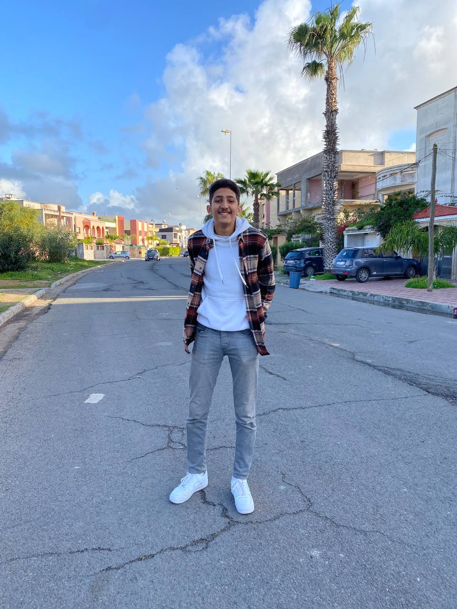

CV en HTML
Mon CV

Informations personnelles:
Nom:El Qorchi
Prénom: Mohammed Taha
Téléphone:0653308326
Education:
2021/2022:baccalauréat en sciences et technologies éléctriques au lycée technique Al Khawarizmy, Safi
2022/2023:1ére année en licence d'enseignement primaire à l'école supérieure d'éducation et de formation (ESEF), El Jadida
Expériences:
2017/2019:Un scout dans l'association scouts Essalam et caporal d' une avant-garde
scoute
2020/2022:Chef de la section des pionniers dans la meme association
Formation professionnelles:
20/02/2020: Comment réaliser un projet
27/10/2021: Caractéristiques d'un chef compétent, Le "LEARDERSHIP"
28/10/2021: Gestion des sections scoutes
Affiliations professionnelles:
Secrétaire générale du club ESPERANZA ESEFJ
Université/département/service professionnel:
1ère année en licence d'enseignement primaire à l'école supérieure d'éducation et de formation (ESEF), El Jadida
Compétences:
Compétent aux logiciels d' "office"
2020/2023:joueur de volleyball au sein de club Olypique Club de Safi(OCS) section Cadettes
2022/2023:joueur de volleyball au sein de club Difaâ Hassani du Jadida (DHJ)
Langues et voyages:
Arabe-Français-Anglais-Espagnol
monter le sommet de Toubkal-Visiter lac d'ifni
Activités
Actullement: jouer le Beach Volleyball à la plage de Safi
Références:
la famille
les amis